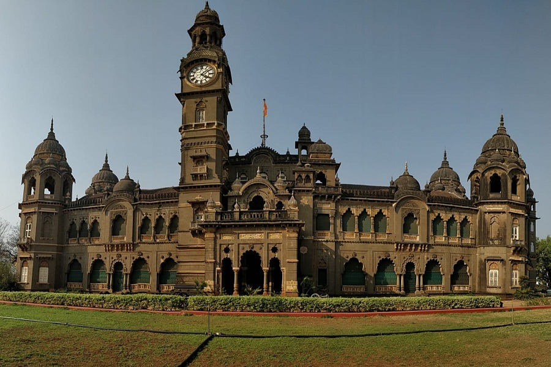

Prince Of Wales Museum
Step into the majestic world of Mumbai's Prince of Wales Museum, a treasure trove of art, history, and culture. Located in the heart of Mumbai, this iconic museum houses a diverse range of exhibits, including ancient artifacts, exquisite paintings, and archaeological wonders, offering visitors a glimpse into India's rich heritage.

Chh. Shivaji Maharaj Museum
Immerse yourself in the legendary legacy of Chhatrapati Shivaji Maharaj at Aurangabad's Shivaji Museum. Discover the heroic tales and valorous exploits of this iconic Maratha warrior through an impressive collection of artifacts, weapons, and portraits, showcasing the indomitable spirit of Shivaji's reign.



Chh. Shahu Maharaj
Delve into the illustrious history of Kolhapur at the Shahu Maharaj Museum, a tribute to the visionary ruler, Shahu Maharaj. Located in Kolhapur, Maharashtra, this museum offers a fascinating insight into the cultural heritage and progressive initiatives of the Kolhapur state, featuring a captivating display of artifacts, royal possessions, and archival documents.

Siddhagiri Gramjivan Museum (Kaneri Museum)
Explore the rich history and cultural heritage of Kolhapur at the Kaneri Museum. Located in the scenic town of Kolhapur, Maharashtra, this museum showcases a fascinating collection of artifacts, sculptures, and historical relics dating back centuries. From intricate artwork to ancient weaponry, Kaneri Museum offers visitors a captivating journey through the region's vibrant past.